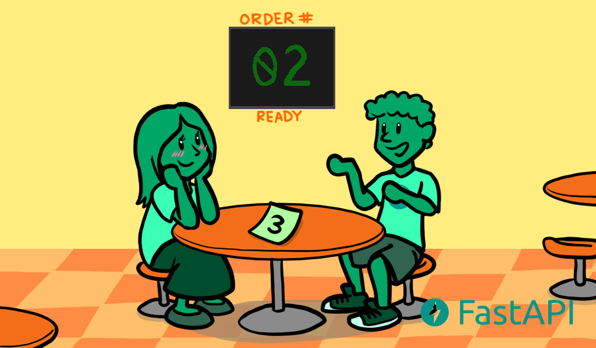
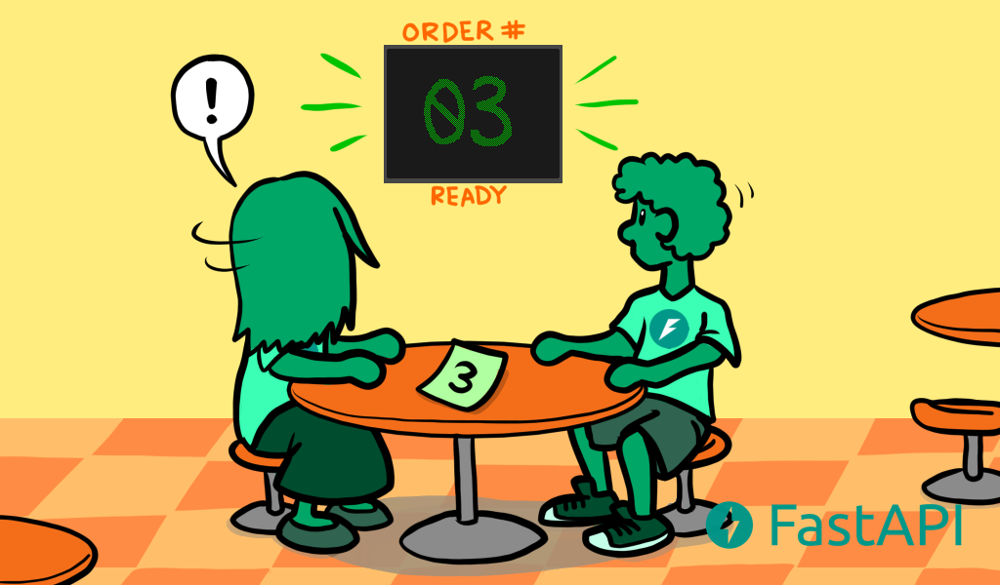
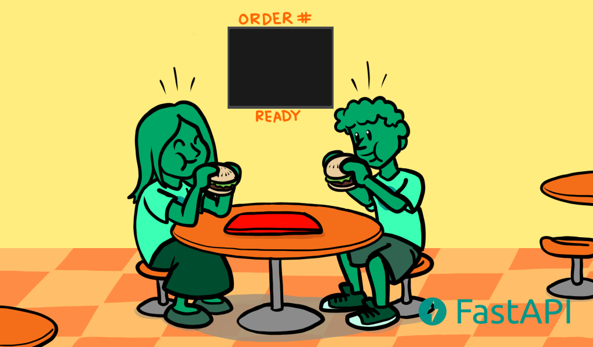
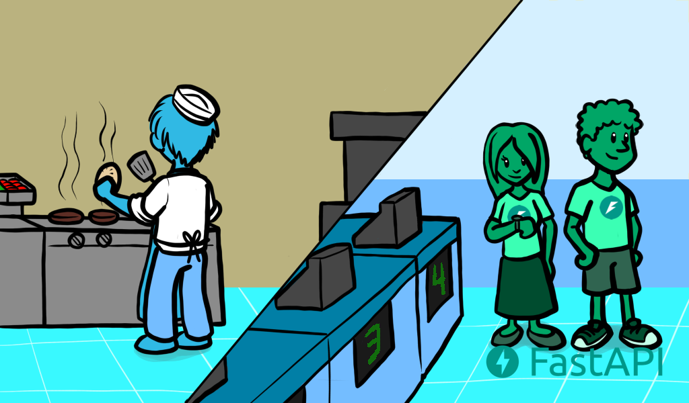

【FastAPI】关于FastAPI异步并发的技术背景和细节¶

FastAPI的路径操作函数，可以使用async def定义：
from typing import Union
from fastapi import FastAPI
app = FastAPI()
@app.get("/")
async def read_root():
return {"Hello": "World"}
@app.get("/items/{item_id}")
async def read_item(item_id: int, q: Union[str, None] = None):
return {"item_id": item_id, "q": q}
这算得上是FastAPI的典型特征之一。
关于这个框架设计，有哪些技术背景和细节呢？
技术背景¶
在Python语法里面，如果你想异步请求三方库，需要使用await：
results = await some_library()
使用了await就必须在def前面加上async：
@app.get('/')
async def read_results():
results = await some_library()
return results
这是Python语法规定。
FastAPI并不要求所有的路径操作函数，都必须定义为async，假如你要实时访问某些三方库，可以简单的使用def就行，不用加上await：
@app.get('/')
def results():
results = some_library()
return results
但是无论你是否使用async，FastAPI都将异步工作，以达到“Fast”的运行速度。
看完文章就明白这句话的意思了。
技术细节¶
Python新版本已经原生支持异步代码了。所谓异步代码，指的是编程语言，会告诉计算机程序，在某个时刻停下来，等待其他任务完成后，再继续运行。在等待期间，计算机程序可以去干点别的事情，而不用一直卡在那里。这些“其他任务”，通常指的是耗时较长的IO操作，比如：
客户端通过网络发送数据；
服务端通过网络发送数据；
程序从磁盘读取文件内容；
程序将文件内容写入磁盘；
远程API操作；
数据库操作；
数据库查询返回结果；
这些操作主要阻塞在IO等待，所以又叫做IO密集型。
并发和并行¶
异步有时候也叫做并发。并发(Concurrency)和并行(parallelism)是不同的概念，并发是指一个处理器同时处理多个任务，并行是指多个处理器同时处理多个不同的任务，并发是逻辑上的同时发生，并行是物理上的同时发生。
并发
餐厅有1个服务员和1个厨子。
你带女朋友到餐厅排队点汉堡：
你们给服务员说来2个汉堡：
服务员给厨师说做2个汉堡：
然后给了你们一个排号：
你们开心的等，因为有排号，不需要担心别人会抢走：

叫号了：

取了汉堡高高兴兴的吃：

并行
餐厅有5个服务员兼厨子。
你们看哪个窗口有空位：
到餐台点2个汉堡：
服务员自己跑到厨房做汉堡：
你们只能站在原地等，如果走开，可能会被其他人拿走：

汉堡做好了：
你的女朋友不开心：
从这个买汉堡的漫画中，可以看到并行比并发会做更多无意义的等待，并行需要5个人（5个服务员兼厨子），并发只需要2个人（1个服务员1个厨子）。这就是为什么很多Web框架要设计成异步并发了，因为很多客户端会发请求给服务端，然后服务端响应给客户端，如果有太多无用的等待，那么整个应用将慢得无法使用。而且硬件资源有限，并发也能更高效利用资源，节约成本。
并发一定就比并行好吗？也不是，只有在出现很多等待时，并发才比并行好。比如你们要打扫房间，一间一间的打扫，没有等待，那么并发和并行就没有区别，如果你再叫3个朋友一起打扫，并行就能更快打扫完。这种执行时间完全取决于任务本身而不是等待的情况，又叫做CPU密集型。计算机里的CPU密集型操作通常需要更复杂的数据计算，比如：
音频或图片处理；
计算机视觉；
机器学习；
深度学习；
FastAPI既支持异步并发，也支持多线程并行。
async和await¶
异步并发使用async和await来实现。
async定义函数：
async def get_burgers(number: int):
# Do some asynchronous stuff to create the burgers
return burgers
await调用函数：
@app.get('/burgers')
async def read_burgers():
burgers = await get_burgers(2)
return burgers
细节中的细节¶
FastAPI会对路径操作函数(path operation function)和依赖(dependencies)进行特殊处理。这个特殊处理是：如果你把函数定义为def而不是async def，那么FastAPI会把它放到单独的线程池中，异步执行，这就是FastAPI精彩的地方。就像官方所说，如果你不清楚你函数里面的调用是不是异步(能不能用await)，那么就把它定义为普通函数，FastAPI会采用多线程的方式处理。乱用async，在async里面有同步调用，则会变成串行，Fast秒变Slow。
而对于其他函数，FastAPI则不会管，def就是同步调用，立马返回结果。
现在回过头来看前面的那句话：但是无论你是否使用async，FastAPI都将异步工作，以达到“Fast”的运行速度。应该更加明白了。
参考资料：
Concurrency and async / await - FastAPI https://fastapi.tiangolo.com/async/
很火的Fastapi框架，用async函数真的比普通函数快吗？https://blog.csdn.net/yyw794/article/details/108859240